Antecipe e receba até 10 anos do Saque Aniversário FGTS!
Dinheiro na mão em até 24 horas para você realizar seus sonhos e planos!
Quero antecipar meu FGTSSolicitação 100% online e descomplicada
Passar horas na fila do banco é coisa do passado. Com a gente, você solicita sua antecipação 100% online com total segurança. E o melhor: recebe seu dinheiro no mesmo dia!
Você não precisa pagar nenhuma parcela: use um dinheiro que já é seu!
Se você tem saldo no FGTS e escolheu pela modalidade Saque Aniversário, não precisa esperar para resgatar o que você tem direito: a gente libera o seu dinheiro!
Você nem precisa se preocupar com o pagamento, porque o valor é debitado diretamente do seu fundo de garantia.
Mais vantagens:
- Fácil contratação, você chama a gente no WhatsApp e nós fazemos tudo por você!
- Melhor taxa do mercado, crédito pessoal à partir de 1,99% a.m!
- Valor na conta no dia seguinte!
Perguntas frequentes
O que é Antecipação do Saque Aniversário?
É um tipo de empréstimo em que o trabalhador que possui saldo no FGTS pode antecipar o dinheiro que receberia apenas no mês do seu aniversário.
Como funciona a Antecipação do Saque Aniversário?
Você pode antecipar até 10 parcelas anuais do seu Saque-Aniversário pagando taxas baixíssimas de juros. Esse empréstimo consiste em uma antecipação do valor do saque disponibilizado no mês do seu aniversário. O saldo do FGTS é utilizado como garantia da operação, e as parcelas são pagas automaticamente da conta vinculada ao FGTS.
Empréstimo sem parcelas mensais?
Ao contratar a Antecipação do Saque-Aniversário, você recebe o dinheiro e não precisa pagar parcelas mensais. O valor é descontado anualmente direto do seu saldo do FGTS.
Onde o dinheiro vai cair?
A liberação do crédito ocorrerá através do envio de TED, em conta da mesma titularidade do solicitante.